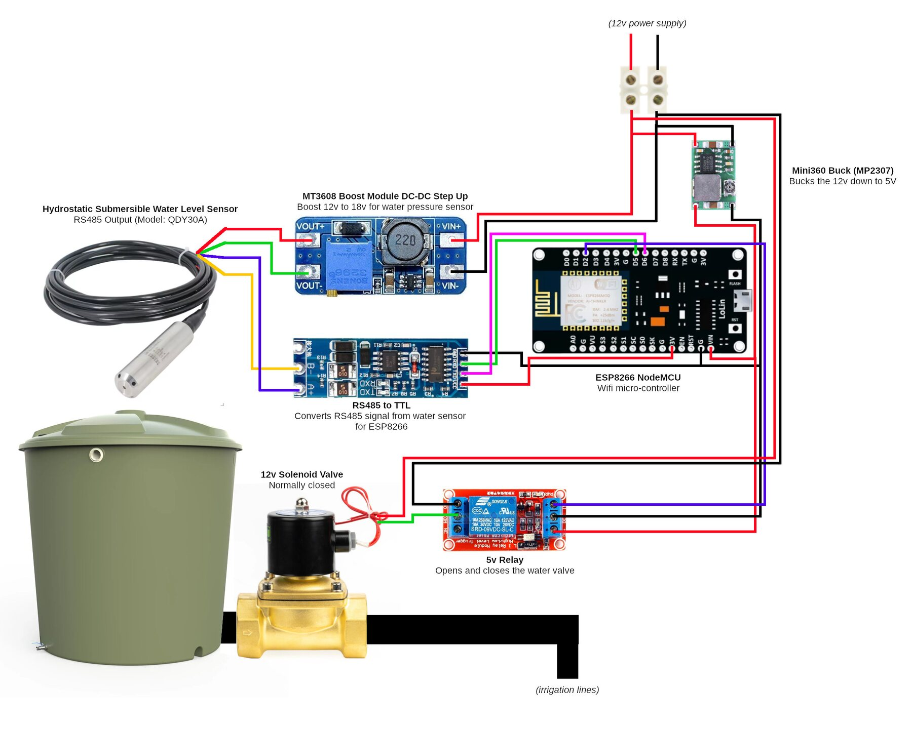

2 Module 2 · Advanced · 3–5 hours
Water Tank Level & Valve
A sealed probe on the tank floor feels the weight of the water above it, and a solenoid valve on the outlet lets the system open and shut the irrigation line.
The level-sensing half is bench-proven end to end — comms, register map and ruler calibration all confirmed, reading through to Node-RED. The valve half is wired to the same node, and how to drive a 12 V solenoid off a pack that sags to 9.0 V is the one measurement still outstanding.
- Parts
- ~$33+1 TBC
- Build time
- 3–5 hours
- Steps proven
- 8 of 9
- Board
- ESP8266
Why you would want this
- Know the tank is getting low before you run out
- Open and shut the irrigation line from anywhere, or on a schedule
- Keep a record of water use across days and weeks
- Never irrigate from an empty tank — the level and the valve are on the same node
Why a pressure probe and not an ultrasonic one
Nearly every beginner tutorial puts an ultrasonic sensor on the tank lid and bounces sound off the water. It is cheaper, and for a real farm tank it is the wrong tool — this module used to describe that design and we changed it deliberately. A tank is an enclosed cylinder full of reflective surfaces with a moving surface on top: the worst possible case for an echo. A pressure probe ignores every one of those problems because it does not look at the water. It sits underneath it.
| Ultrasonic, from the top | Pressure probe — this module | |
|---|---|---|
| How it measures | Times a sound echo off the surface | Feels the weight of water above it |
| Tank walls | Sound bounces off them — false readings | Doesn't care |
| Ripples, foam, debris | Scatter the echo | Doesn't care |
| Condensation on the face | Blinds it | Lives underwater anyway |
| Mounting | Needs clear line of sight straight down | Just drop it in |
| Cost | Cheaper | More |
| Power | Runs off the board | Needs 12–36 V — hence the boost converter |
How it goes together

What you will need
| Part | What it does | Est. | Link |
|---|---|---|---|
| ESP8266 NodeMCU v3 (ESP-12E) | The small computer that runs the node | $3 | Buy ESP8266 NodeMCU v3 (ESP-12E) ↗ |
|
QDY30A submersible pressure probe
Buy the RS485 variant. The same listing sells 4–20 mA, 0–5 V and 0–10 V outputs, and only RS485 works with this guide. Check the options before you pay. |
Sits on the tank floor and measures the depth of water above it | TBC | Buy QDY30A submersible pressure probe ↗ |
|
MAX485 / HW-0519 RS485-to-TTL module
The listing ships two different boards. The HW-0519 is auto-direction and needs no DE pin; the classic breakout has DE/RE and costs you a GPIO. Both work — but only the HW-0519 leaves you a spare pin for the valve relay. |
Lets the ESP8266 speak RS485 to the probe | $2 | Buy MAX485 / HW-0519 RS485-to-TTL module ↗ |
|
MT3608 boost converter
Set it to 18 V with NOTHING on the output, before the probe is ever connected. |
Steps 12 V up to the 18 V the water probe needs | $2 | Buy MT3608 boost converter ↗ |
|
Mini360 buck converter (MP2307)
Fine for a sensor node at a couple of hundred milliamps. Do NOT use one to charge a phone — it misbehaves above ~1.5 A in a hot box. That job wants the 3 A synchronous buck in Module 1. |
Steps the pack's 12 V down to 5 V for the ESP8266 and RS485 board | $2 | — |
| 1-channel 5 V relay module | Lets the 3.3 V ESP8266 switch the 12 V valve | $2 | — |
|
12 V solenoid valve, normally closed
Normally-closed is the safety property this module rests on: no power = shut. Also check the minimum pressure differential — a pilot/servo valve needs ~0.2 bar and will not open on a low gravity tank no matter how good your wiring is. |
Opens to let water out of the tank and into the irrigation line | $8 | Buy 12 V solenoid valve, normally closed ↗ |
|
1N5819 flyback diode
Not optional. Without it the ESP8266 reboots — but only when the valve closes. |
Absorbs the spike the valve coil throws when it shuts | $1 | Buy 1N5819 flyback diode ↗ |
| Jumper wires | Connects everything | $1 | — |
| USB cable | Powers the ESP8266 and loads code onto it | $2 | — |
| Hose fittings for the valve | Joins the valve into your irrigation line | $5 | — |
| Waterproof container | Protects the electronics | $5 | — |
| Approximate total | ~$33 | +1 TBC | |
Prices are what we paid or expect to pay, in USD, mostly on AliExpress — they move, and shipping to a small island is its own line item. Links are not affiliate links and we get nothing if you use them.
Wiring
Water bus — QDY30A
- Baud
- 9600
- Frame
- 8N1
- Slave
- 1
| Probe wire | From | Goes to | Note |
|---|---|---|---|
| Red | probe red | MT3608 OUT+ (18 V) | 18 V — this wire and nothing else. 18 V into the MAX485 or the ESP destroys both. |
| Green | probe green | MT3608 OUT− + common ground | Prime suspect for an intermittent read. One ground, not two. |
| Blue | probe blue | HW-0519 A | A+ — note this is the OPPOSITE colour convention to the soil probe. |
| Yellow | probe yellow | HW-0519 B | B− |
Module 2 as this guide builds it
wire this onefirmware/water-level/water-level.ino
This is the assignment in the wiring picture above, and it leaves D2 free for the valve relay. On a classic DE/RE breakout, join DE and RE and drive them from D1; an auto-direction HW-0519 needs no DE pin at all.
| RS485 pad | ESP pin | GPIO | Direction |
|---|---|---|---|
| RXD / RO | D5 | GPIO14 | in — data toward the ESP |
| TXD / DI | D6 | GPIO12 | out — data toward the probe |
| relay IN | D2 | GPIO4 | out — opens and shuts the valve |
| DE + RE | D1 | GPIO5 | classic breakout only — omit on HW-0519 |
| VCC | 3V3 | — | power |
| GND | GND | — | common ground star |
Ian's deployed farm-node (water + valve)
firmware/farm-node/farm-node.ino
Swapped relative to the build above — the pins follow how the board was actually soldered on 2026-07-19, and the firmware follows the iron. NEVER run water-level.ino on this board: it drives D1 as DE, and D1 here is the water probe's TXD, so it would clamp the driver onto the bus and the probe could never reply.
| RS485 pad | ESP pin | GPIO | Direction |
|---|---|---|---|
| RXD | D7 | GPIO13 | in — data toward the ESP |
| TXD | D1 | GPIO5 | out — data toward the probe |
| relay IN | D2 | GPIO4 | out — opens and shuts the valve |
| VCC | 3V3 | — | power |
| GND | GND | — | common ground star |
| Register | Means | Scaling | Type |
|---|---|---|---|
| 0x0004 | Depth above the probe | 1 count = 1 mm | signed int16 |
Both RS485 board variants work and the firmware handles both — but the auto-direction HW-0519 is what leaves D2 free for the valve relay. A classic DE/RE breakout spends an extra GPIO on direction, and the budget is only five.
The valve side
The valve never touches the logic side of the board. It hangs off the relay's switched contacts, which are electrically isolated from the ESP8266 — that isolation is exactly why 12 V cannot backfeed your laptop while you bench it. The only way to put valve current onto USB is to wire the coil to the ESP's 5 V pin. Don't.
| Relay pin | Goes to | Note |
|---|---|---|
| VCC | 5 V | From the Mini360 — or VBUS if you are on USB. Never VIN, which floats. |
| GND | GND | Common ground with the ESP. |
| IN | D2 (GPIO4) | The one safe pin left once the bus has taken D5 and D6. |
| COM / NO | valve coil | NO, so relay unpowered = valve unpowered = valve shut. |
Build it, step by step
-
Set both converters before anything else is connected
This is the one step where you can actually destroy something. Both modules' trimmers ship at a random setting, and the boost feeds an 18 V rail.
Connect 12 V to IN+ / IN− with nothing on the output. Put a multimeter across OUT+ / OUT−. Turn the MT3608's screw until it reads a steady 18.0 V, and the Mini360's until it reads 5.0 V. Power down. Now connect the probe and the ESP8266.
-
Wire it up
Four wires out of the probe, four wires between the RS485 board and the ESP8266, and three to the relay. The tables below are generated from the same pin data as the wiring cheatsheet, so they cannot drift apart.
-
Load the code
The firmware is
firmware/water-level/. Install the Arduino IDE, addesp8266in Boards Manager, and select NodeMCU 1.0 (ESP-12E). There are no libraries to install.Copy
config.example.htoconfig.hand edit that — never the sketch itself. Start withBENCH_MODE 1so it prints over serial and skips WiFi entirely: bring the sensor up before WiFi joins the list of things that can be broken.# always compile --upload. A bare `upload` flashes a stale .bin arduino-cli compile --upload \ --fqbn esp8266:esp8266:nodemcuv2 -p /dev/ttyUSB0 firmware/water-level -
Zero it
Read the probe dry, sitting in air. It will not read zero — ours read about 26, which is 26 mm of water that does not exist. That is normal and within spec.
Write that number down. Your depth is
reading − dry_reading. Do this once at install; if readings drift over months, do it again. -
Check it actually moves
Lower the probe into a bucket. The number should climb clearly, hold steady when it stops moving, and fall back when you lift it out. If it does not respond to depth, stop — nothing after this will work.
-
Wire the relay and the valve
Design guidance — our own build hasn't reached this step yet.
The valve goes on the relay's switched side, never the logic side. Use the NO (normally open) contact so that relay unpowered = valve unpowered = valve shut.
12V + ────────────────► valve terminal 1 valve terminal 2 ──────► relay COM relay NO ──────────────► 12V − 1N5819 across the valve's two terminals, stripe (cathode) to the + side -
Build the safety cutoff before you leave it alone
This is the step people skip and then regret. If a command is lost, or the link drops while the valve is open, the valve stays open — and a failed poll deliberately holds the last state, so an open valve plus a dead hotspot is an open valve forever. Nothing upstream can help, because nothing upstream can reach it.
So the node enforces its own dead-man timer, independent of any command:
VALVE_MAX_OPEN_Sshuts the valve after a maximum run time whatever the network says. It ships at 1800 s and defaults to on, so a farmer opts out of the guard rather than into it. The server-side expiry mirrors it at 30 minutes. -
Install on your tank
Lower the probe to the bottom and let it sit flat. Fit the valve into the outlet line with the flow arrow pointing the way the water goes. Protect the ESP8266, RS485 board and both converters inside the waterproof container. Measure your tank's water depth when full, once — that is what turns millimetres into “how full is my tank”.
-
Point it at the base station
Set
BENCH_MODE 0, put your hotspot's name and password inconfig.h, and leavePOST_HOSTempty. The phone running the hotspot is the node's gateway by definition, so the node works out the address itself.Test the endpoint before you ever blame the firmware:
curl -X POST http://<phone-ip>:1880/water \ -H 'Content-Type: application/json' \ -d '{"node":"test","ok":true,"depth_mm":500}'
When it doesn't work
Ordered roughly by how often it has actually been the answer.
| Symptom | Almost always | What to do |
|---|---|---|
| No reading at all | A and B swapped | Swap the blue and yellow wires. This is common — try it before anything else. |
| No reading, probe cold | Not enough voltage | Meter red to green: it must read 18 V, not the raw 12 V. |
| Boost converter reads 0 V | Trimmer parked mid-range | It is 25-turn with no end stops. Keep turning, watch the meter. |
| Readings 10× off | Wrong scaling | 1 count = 1 mm. Check you are not treating it as centimetres. |
| Reading is about 65000 | Read as unsigned | It is signed int16. Readings slightly below zero are real and legitimate. |
| Reading never changes | Wrong register | It is 0x0004. |
| Readings fail randomly | No common ground | Probe green, boost OUT−, buck OUT−, MAX485 GND and ESP GND must be one rail. |
| Drifts with the weather | Breather tube blocked or wet | Keep the loose cable end dry and open to air. |
| Reads, then silent, then reads | A wire, not the firmware | Wiggle-test each one while the node polls, prime suspect green/ground. Do this before soldering anything into a box. |
| Relay clicks but the valve doesn't move | Not enough volts at the coil under load | Meter across the valve while the relay is on. A sagging pack meters fine at rest. |
| Relay doesn't click at all | Powered from VIN | Use VBUS. VIN floats when the board is on USB. |
| ESP reboots when the valve closes | Missing flyback diode | Fit the 1N5819 across the valve terminals, stripe to +. |
| Valve energised, nothing flows | Below the valve's minimum pressure differential | A pilot valve needs ~0.2 bar. Check the head above it; if marginal, spec a direct-acting “0 bar” valve. |
| Valve opens on a full battery, not a flat one | Solenoid under-volted | Measure the coil current and check the pack voltage under that load, not at rest. |
How this fits with the others
The source
- Full module document — docs/01-water-tank-level-sensor.md ↗
- Firmware — firmware/water-level/ ↗
- Build journal, including everything that went wrong ↗
- Full wiring cheatsheet
Measured where it is built; the rest is worked out and costed.